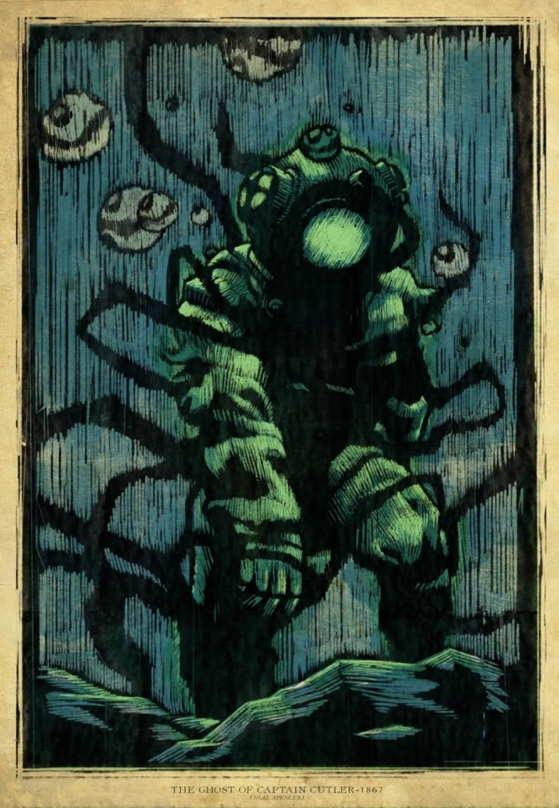

REGISTRO DE CAMPO ·
ARQUIVO DE CAMPO
CRIATURAS CATALOGADAS
Os registros abaixo foram organizados por porte. Quanto mais profunda a classificação, menor a certeza de que o que está escrito aqui seja verdade.
24 REGISTROSAMEAÇA · RARIDADE · ESPÉCIE
REGISTROS DOS MARES DESCONHECIDOS
Nem tudo que vive no oceano foi feito para ser encontrado. Este é o registro das criaturas conhecidas — e de algumas que talvez preferissem permanecer desconhecidas.
ABRIR O BESTIÁRIO↓
ARQUIVO DE CAMPO
Os registros abaixo foram organizados por porte. Quanto mais profunda a classificação, menor a certeza de que o que está escrito aqui seja verdade.